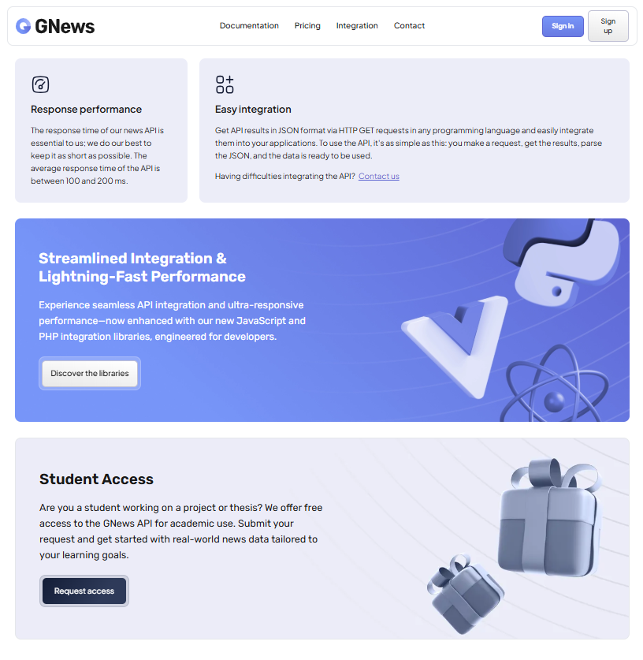
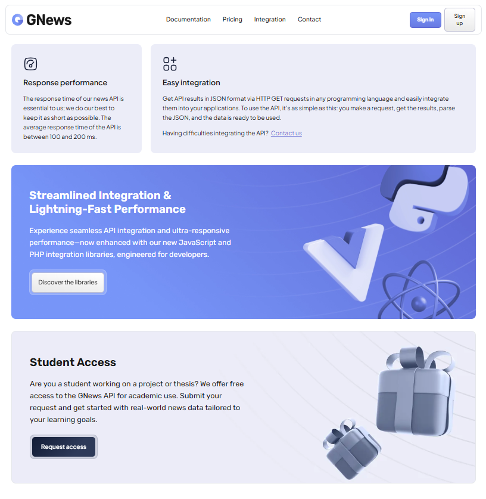

Gigathink
Stage de 1 mois - Développeur Full-Stack
Présentation de l'Entreprise
Gigathink SNC est une société en nom collectif suisse fondée en octobre 2020, spécialisée dans les services
informatiques. Elle propose le développement de sites web et d’applications mobiles, ainsi que des
prestations de maintenance techniques. Basée à Vernier (Genève), l’entreprise est conduite par trois
associés — Adamo Cannone, Florian Burgener et Jules Bursik — tous détenteurs des pouvoirs de signature.
Gigathink vise à accompagner ses clients de la conception à l’optimisation de leurs solutions numériques,
dans un environnement technologique évolutif.
Elle développe également différents produits numériques, dont GNews, une API performante permettant de
collecter, filtrer et diffuser des actualités en temps réel à partir de multiples sources. Conçue pour les
développeurs et les entreprises, cette API facilite l’intégration rapide de flux d’informations fiables dans
des applications, sites web ou systèmes internes.
Refonte du Site
J’ai réalisé la refonte complète du site de Gigathink SNC, une société suisse spécialisée dans les services informatiques, afin d’optimiser son référencement naturel (SEO) et de renforcer son image de marque. Ce projet a inclus la conception de maquettes ergonomiques sur Figma pour améliorer l’expérience utilisateur, ainsi que la mise en place et la gestion du développement via GitLab. L’objectif était d’offrir à Gigathink une plateforme plus moderne, intuitive et performante, capable de refléter son expertise dans un environnement technologique en constante évolution.
Pages Refaites
- Pricing
- Integration
- Contact
- Login
- Sign up
- FAQ
- Information
- Question
- Partenaire
Aperçus du Site


 



Traduction du Site
Dans le cadre de la refonte du site, j’ai également procédé à la saisie et à l’organisation de l’ensemble des contenus textuels. Chaque mot et expression importants ont été identifiés puis enregistrés comme mots-clés stratégiques, afin d’optimiser la visibilité et la cohérence du site. J’ai ensuite intégré leurs traductions en anglais et en espagnol, stockées et structurées dans des fichiers JSON, ce qui facilite la gestion multilingue et permet de mettre à jour les contenus de manière rapide et centralisée.

Comparaison Concurrence
Dans ce projet, j’ai réalisé une étude comparative approfondie de quatre API concurrentes afin d’identifier leurs forces et faiblesses. J’ai compilé les résultats sous forme de tableau Excel pour visualiser clairement les différences. Ensuite, j’ai intégré cette analyse directement sur le site, offrant ainsi une présentation claire et structurée des options disponibles pour les utilisateurs. Ce travail m’a permis de développer à la fois mes compétences en recherche, en organisation de données et en intégration web.
Conclusion du Stage
Ce stage m’a permis de gagner en autonomie tout en découvrant de nouveaux outils essentiels tels que Figma pour la conception graphique et Git pour la gestion collaborative du code. Travailler en équipe m’a également beaucoup appris sur la coordination et la communication dans un environnement professionnel. Cette expérience a été très bénéfique pour mon développement personnel et technique.